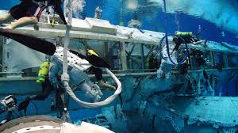

Trennon Talbot
Light Propulsion Graduation Program
Location:
We are located on the Light Side of the Moon. This allows for our students to experience total freedom in testing their prototypes as well as quick and easy access to internships.
Unlike our Dark Moon University, we offer a very energetic and bright campus to tour and a lovely view over the gardens and orchards from the dorms.
About
Spacesuit Training: You will learn how to spacewalk and how to repair minor damages outside local ships.
Math Skills: If you are a brainy for math, this major is for you as we explore material reflection of materials and transfer rates of light energy.
Welding: As versitile as the materials it uses, master the flames as we learn who to build our own ships to cross the open expance of space.
Things To Do
- Build Ships
- Crew Member
- Teacher
